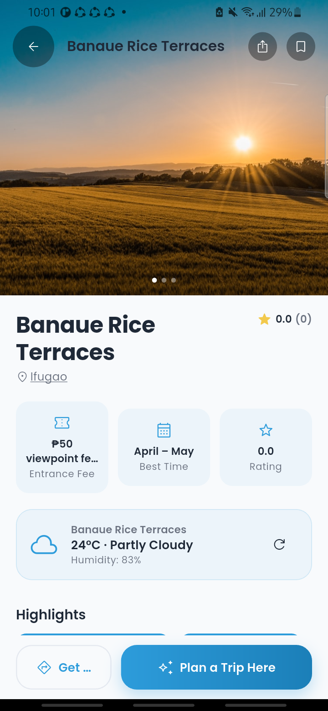
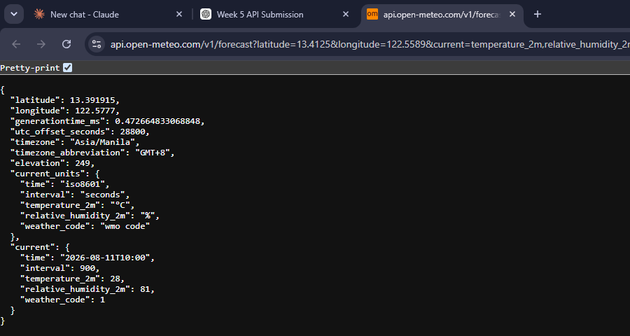
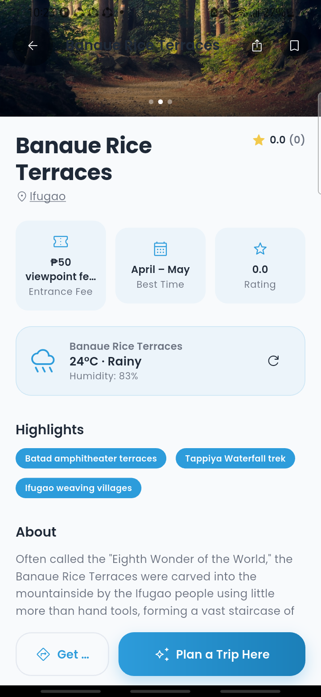
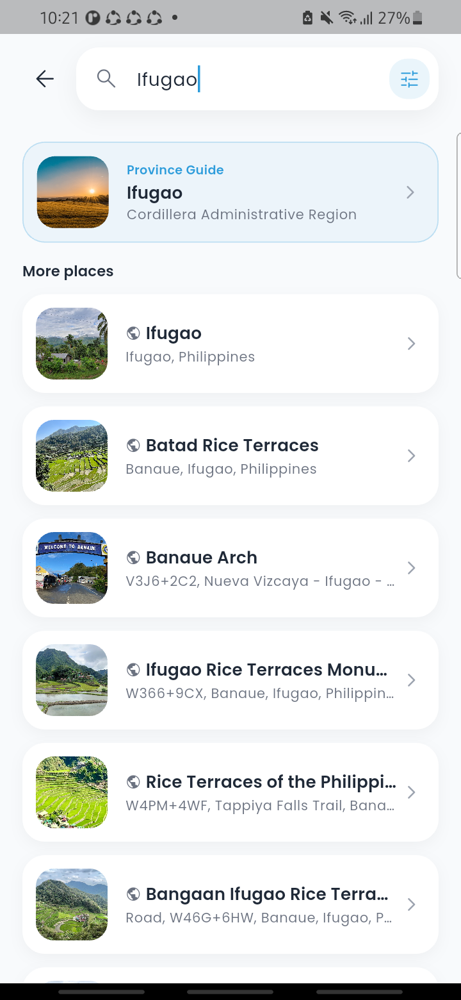

TripNest PH integrates external APIs to provide users with real-time and relevant information when discovering and planning trips around the Philippines. This submission adds a new live current-weather feature to every destination's details page, built on top of the app's existing API-driven search and photo infrastructure.
The API integration allows the application to retrieve external data, process JSON responses, and display the information directly within the application's user interface.
Main API Features:
Purpose: Retrieves the live current temperature, weather condition, and humidity for a destination, shown directly on that destination's details page. This is the feature built for this submission.
HTTP Method: GET
Endpoint:
https://api.open-meteo.com/v1/forecast?latitude={lat}&longitude={lng}¤t=temperature_2m,relative_humidity_2m,weather_code&timezone=auto
Purpose: Retrieves a multi-day weather outlook (per-day high/low and condition) used in AI-generated trip itineraries, so a traveler can see expected weather across their whole trip. Same provider as API 1, different endpoint parameters and a pre-existing part of TripNest PH.
HTTP Method: GET
Endpoint:
https://api.open-meteo.com/v1/forecast?latitude={lat}&longitude={lng}&daily=weathercode,temperature_2m_max,temperature_2m_min&timezone=auto&forecast_days={n}
Purpose: Retrieves real photos of destinations, restaurants, and attractions from Google Places, displayed throughout the app's cards and details pages. Proxied through a TripNest PH Cloud Function so the real Google API key is never exposed to the client.
HTTP Method: GET
Endpoint:
https://asia-southeast1-tripnest-ph.cloudfunctions.net/placesPhoto?photoName={signedToken}&maxWidthPx={width}
Purpose: Powers the app's live location search (Section 6) — resolving a free-text query like "Ifugao" or "beaches in Palawan" into real places, since Places API (New) requires the query as a JSON request body rather than URL parameters. Proxied through a Cloud Function for the same key-security reason as API 3.
HTTP Method: POST
Endpoint:
https://places.googleapis.com/v1/places:searchText
Request body sent:
{
"textQuery": "Ifugao",
"maxResultCount": 20
}
functions/index.js — exports.placesSearchText
The application uses HTTP GET requests to retrieve data from the external APIs.
The process works as follows:
For example, when a user opens a destination's details page, TripNest PH sends a GET request to the Open-Meteo current-weather endpoint using that destination's stored coordinates. The returned JSON data is processed by the application and the temperature, condition, and humidity are displayed to the user.
In code, this is a plain http.get() call:
final uri = Uri.parse( 'https://api.open-meteo.com/v1/forecast' '?latitude=$latitude&longitude=$longitude' '¤t=temperature_2m,relative_humidity_2m,weather_code' '&timezone=auto', ); final response = await _client.get(uri).timeout(const Duration(seconds: 10));
lib/core/services/weather_service.dart — WeatherService.getCurrentWeather()
The API returns information in JSON format:
{
"latitude": 13.391915,
"longitude": 122.5777,
"generationtime_ms": 0.47,
"utc_offset_seconds": 28800,
"timezone": "Asia/Manila",
"timezone_abbreviation": "GMT+8",
"elevation": 249,
"current_units": {
"time": "iso8601",
"interval": "seconds",
"temperature_2m": "°C",
"relative_humidity_2m": "%",
"weather_code": "wmo code"
},
"current": {
"time": "2026-08-11T10:00",
"interval": 900,
"temperature_2m": 28,
"relative_humidity_2m": 81,
"weather_code": 1
}
}
The application extracts the required fields (temperature_2m, relative_humidity_2m,
weather_code) from the current object and maps the numeric weather_code to
a human-readable condition ("Partly Cloudy", "Rainy", etc.) before displaying them in the appropriate UI
components.
The retrieved API data is displayed directly inside TripNest PH, on the destination's details page:
This allows travelers to check whether current conditions are good for visiting a specific destination without leaving the app or opening a separate weather service.
TripNest PH includes search and filtering functionality over API-backed location data. Users can search for a specific destination, restaurant, or province, and the app returns live matching results — a mix of TripNest's own curated content and real-time Google Places results, fetched via the POST-based Places Text Search endpoint (API 4, Section 2).
Example:
IfugaoThis makes it easier for users to find relevant information quickly, whether they're looking for a whole province, a specific attraction, or a general area.
A refresh function was implemented on the current-weather card so users can retrieve updated information without restarting or reloading the application.
Tapping the refresh icon re-runs getCurrentWeather() and updates the card in place via
setState — no navigation, no full page reload. During testing, a refresh on the same destination
minutes apart returned a genuinely different live reading (condition changed from "Partly Cloudy" to "Rainy"),
confirming the data is truly live rather than cached or static.
Multiple distinct API endpoints were used to provide different types of information:
| API Endpoint | Purpose | Method |
|---|---|---|
api.open-meteo.com/v1/forecast (current=) | Live current weather for a destination (this submission) | GET |
api.open-meteo.com/v1/forecast (daily=) | Multi-day forecast for AI-generated itineraries | GET |
.../placesPhoto | Real destination/restaurant photos (Google Places, proxied) | GET |
places.googleapis.com/v1/places:searchText | Live location search (province/place/category), proxied | POST |
Using multiple endpoints allows TripNest PH to provide more comprehensive, genuinely live information instead of relying on a single external data source or static, hand-entered content.
Basic error handling was implemented to handle possible API and network problems. The application handles:
When an error occurs, the application displays an appropriate inline message instead of crashing:
Verified by code review in lib/core/widgets/details/current_weather_card.dart
(the FutureBuilder's snapshot.hasError branch) and
lib/core/services/weather_service.dart (explicit exceptions on a non-200 status or
a malformed response, instead of silently failing).




Figure 6 (Error Handling) — not pictured: reliably forcing a live network failure on the physical test device also disconnects its wireless debugging session, so this was verified by code review instead (see Section 9) rather than a live screenshot.
These additional features improve the usability and functionality of TripNest PH by allowing users to find information more efficiently and retrieve updated data dynamically.
The API integration improves TripNest PH by providing users with additional and up-to-date information related to their travel destinations. Instead of relying only on information stored in the application's database, the system retrieves relevant, live data from external services in real time — starting with current weather, which directly affects whether a trip to a destination is a good idea right now. Search and filtering make it easier for users to find specific destinations, while the dynamic refresh feature allows users to retrieve updated information without restarting the application.
The API integration improved the functionality of TripNest PH by allowing the application to retrieve useful external information and display it directly to travelers, right where they're already deciding whether to visit a place. Implementing multiple API endpoints, search and filtering, and dynamic data refreshing made the application more interactive and useful. One challenge encountered during implementation was structuring the request so a failure never breaks the page — the app's existing weather feature quietly swallows errors since weather there is a "nice to have," but for this assignment I wanted the error path to be genuinely testable, so the new current-weather method throws real exceptions and a dedicated loading/error/retry UI was built around it. Another challenge was mapping Open-Meteo's numeric WMO weather codes into readable conditions and icons rather than showing raw numbers to the user. A more practical challenge was environment-related rather than code-related: getting a clean physical-device build required clearing a nearly-full disk and a corrupted Gradle cache before the app would install at all. Overall, the integration was straightforward once those environment issues were resolved, since Open-Meteo requires no API key and needed no extra credential-management work.